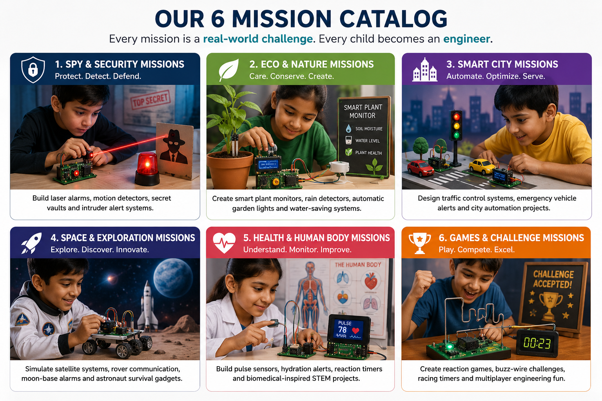

We teach concepts through stories, experiments, and real-world problems.
At LearnSMTH, children do not just memorize science or math. They experience it through missions, build real circuits, explain their thinking, and discover that learning can feel joyful, useful, and deeply human.
Parents often ask: “How do you teach so much without making it feel like school?” The answer is simple: we start with purpose, then let children discover the concepts for themselves.

How the learning journey begins
We begin with a human problem, not a textbook. When a child cares about the challenge, the concepts become easier to understand because they are attached to a reason.
1. Start with empathy
Every mission begins with a real person, a real need, and a real consequence. Children are invited to care before they are taught anything technical.
2. Observe before explaining
Instead of jumping straight to definitions, we ask children what they notice and what might help. This builds curiosity and gives concepts meaning.
3. Build and test
Children explore circuits, sensors, logic, and design through hands-on work. They learn by trying, failing, fixing, and trying again.
4. Explain and reflect
Each child presents their idea, shares their reasoning, and reflects on what worked. This strengthens communication and confidence.
What children actually learn
The learning is broader than electronics. Children practice science, logic, communication, collaboration, and self-belief at the same time.
Science & Systems
- Inputs and outputs
- Open and closed circuits
- Energy and sensors
Math & Logic
- Patterns and sequences
- Binary thinking
- Flowcharts and decision-making
Communication
- Storytelling
- Listening
- Presenting ideas clearly
Life Skills
- Empathy
- Teamwork
- Problem-solving and resilience
Why this is holistic learning
We do not treat a child as a container for information. We see them as a young thinker, builder, communicator, and teammate. That is why our sessions combine technical challenges with reflection, role rotation, and public presentation.
When a child builds a circuit, they are also learning to ask better questions, explain their reasoning, work with peers, and stay calm when something fails.

What a typical mission looks like
Mission Brief
A story introduces a real problem that matters to someone in the community.
Observe & Question
Children identify the need, the constraints, and possible solutions.
Investigate
They explore components, test ideas, and discover how sensors and circuits work.
Build & Improve
They move from breadboard prototypes to a real PCB and refine their designs.
Present & Reflect
Each team explains their thinking and receives feedback from peers and mentors.
Sample Mission: Guardian Shield (Burglar Alarm)
Below is a short sample of the mission content we use in our workshops so parents know what to expect.
Mission Snapshot
Title: Guardian Shield — Protect Grandma's Home
Target: Grade 6 (Spark Squad) · Duration: 3.5 hours · Type: Team-based
Mission Goal
Students design a simple burglar alarm to warn an elderly neighbour before someone enters. The goal is to connect real human need with hands-on electronics so concepts feel meaningful.
Learning Outcomes (selected)
- Understand inputs, decisions, and outputs (sensors → logic → buzzer/LED)
- Practice basic circuit building: breadboard → PCB
- Develop teamwork, presentation skills, and empathy
- Apply IF-THEN logic and simple flowchart thinking
Workshop Flow (high level)
- Mission Briefing (story and empathy)
- Problem Discovery & Science Investigation
- Breadboard Build & Testing
- PCB Assembly and Team Presentation
Materials (per team of 4)
Breadboard, Arduino Nano (or battery circuit), reed/tilt switch, active buzzer, LED, resistors, battery pack, jumper wires, Guardian Shield PCB, screwdriver, workbook.
Why parents like this format
- Children build a tangible product they can explain and keep.
- Lessons are interdisciplinary — science, math, language, and social skills.
- Facilitators focus on questioning, not lecturing — encouraging discovery.
Contact us if you'd like more details about running this mission in your community.

Contact LearnSMTH
If you would like to explore a workshop for your child or apartment community, please reach out using any of the details below.
- WhatsApp: +91 8825558423
- Email: hello@learnsmth.in
- Website: LearnSMTH.in
- Location: Chennai, Tamil Nadu